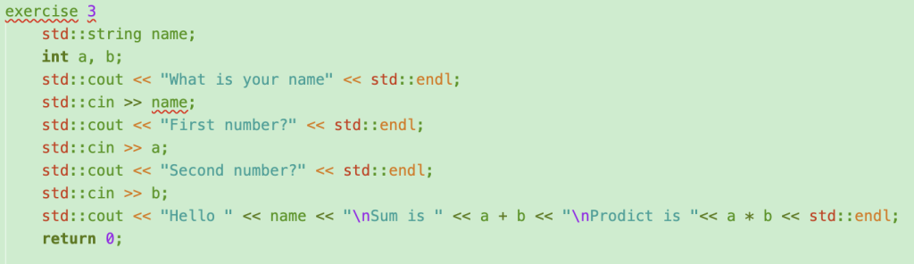
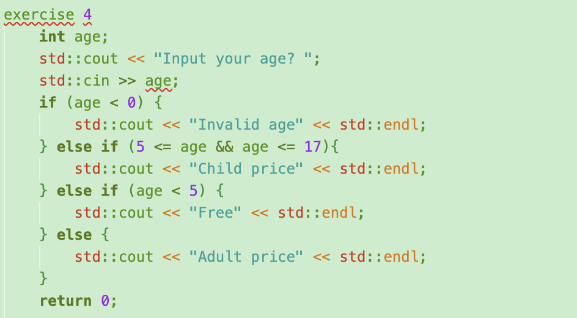
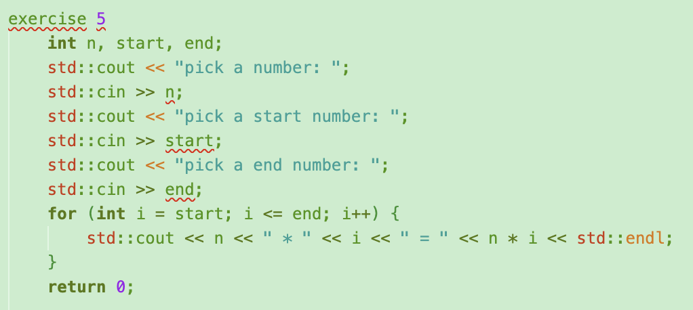
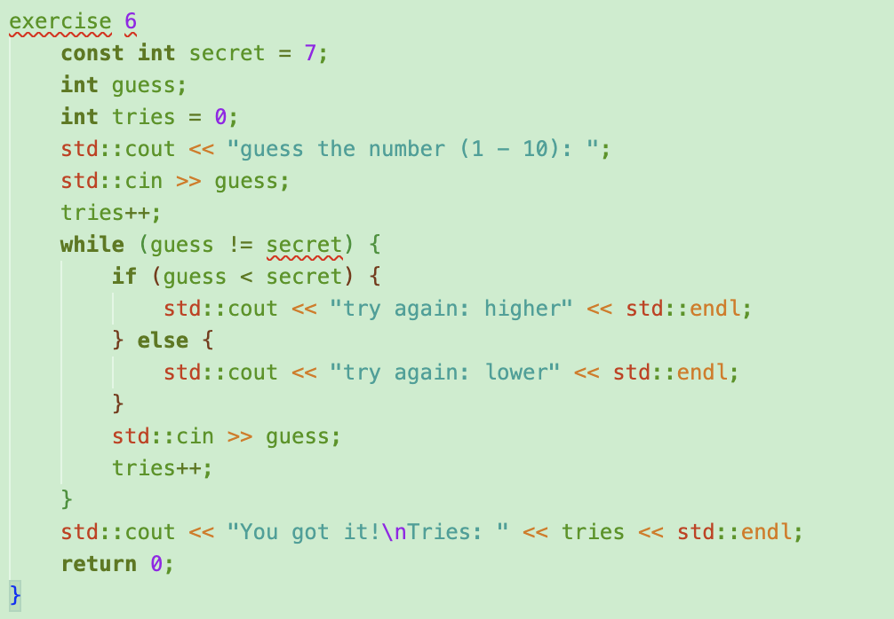

Introduction to C++ Foundations
In this first week of programming, I transitioned from conceptual understanding to practical implementation using C++. My primary learning objective was to master the basic syntax of input/output streams, variable types, and control structures. Through exercises 1 and 2, I learned how C++ manages data using static typing (e.g., int, double, string), which taught me the importance of memory and precision in low-level languages.
The most significant challenge I encountered was in Exercise 4 (conditional logic). In Exercise 4, I initially struggled with the sequence of if-else statements. I realized that the order of conditions is critical; if I checked for “Adult price” before “Child price,” the logic could fall through incorrectly. Overcoming this required me to “desk-check” my logic, tracing the program’s path with different age inputs (like 3 or 18) to ensure every branch was reachable and accurate.
Overall, this week taught me that programming is a balance between strict syntax and creative problem-solving. By the end of Exercise 6, I felt more confident in using loops to handle unpredictable user input, a skill that will be vital as I move toward more complex embedded systems projects.
Link to code outcome screenshots:
https://drive.google.com/drive/folders/1e-wOtcM3a2s1WXLseRacD0rqPVBZ4x12?usp=sharing
Critcal reflection questions
1. On Output and Variables
The use of std::cout suggests that programming languages treat communication as a directed “stream” of data, abstracting complex hardware processes into a simple flow of characters. As noted in Dijkstra’s On the Cruelty of Really Teaching Computing Science, this represents a radical novelty; we aren’t just talking to a machine, we are managing formal systems. Thinking about “input” and “output” shifts our perspective of a program from a static set of instructions to a metabolic process. The program becomes a transformer of information, where abstraction (as discussed in the Beginner’s Guide) allows us to ignore the “how” of the screen pixels and focus on the “what” of the logic.

2. On Decision Making
When we design conditions, we are modelling discretisation, the act of slicing a continuous world into “if-else” binary states. As McKenzie Wark explores in A Hacker Manifesto, this abstraction creates new properties and boundaries. The order of conditions is crucial because it creates a hierarchy of importance; the first condition met “wins,” reflecting how we prioritize values in the real world. For example, a grading algorithm that checks for “Fail” before “Pass” emphasizes deficiency over achievement. Structuring decisions this way can reinforce systemic biases if our “computational logic” (per Guzdial) fails to account for the nuance and fluidity of human experience, forcing rigid categories onto messy realities.

3. On Repetition
Different loops reflect distinct philosophies of persistence. A for loop embodies a teleological approach, it has a fixed boundary and a known end, much like a scheduled workday or a recipe. In contrast, a while loop represents responsiveness or survival, it continues until an environmental condition changes, mirroring a heartbeat or a thermostat. When viewed through the lens of Thermodynamic Computing, these loops aren’t just logic, they are physical events that consume energy. A while loop that runs indefinitely is a literal expenditure of heat and entropy. This makes the “fixed” nature of a for loop feel like a conservative use of resources, whereas a while loop feels more like a living, persistent interaction with a changing world.

